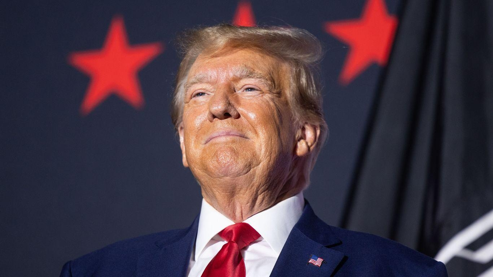

Trump requests discussing classified documents case at Mar-a-LagoTrump's lawyers request secure facility at Mar-a-Lago to discuss classified documents Lawyers for former President Trump asked the government on Wednesday to reestablish a secure facility "at or near" Mar-a-Lago for him to discuss classified documents in the criminal investigation. Driving the news: Trump's attorneys argued in the filing that there are "immense practical and logistical hurdles and costs that make it virtually impossible for [Trump] to make regular trips to a public facility to discuss classified discovery material with counsel ... to conduct a defense consistent with the rights afforded by the Constitution." - The former president's legal team asked the federal judge overseeing the classified documents case to reestablish the special facility that Trump used while president. - "Re-establishing the same secure area that existed during President Trump's term as President of the United States is a secure, efficient, and cost-effective way for these conversations to take place in a fully secure environment," his attorneys wrote in the filing. The big picture: Trump was indicted in June in the criminal investigation into his handling of classified documents after leaving office. He was also charged last month in a superseding indictment with a new count of retaining classified material. - The request comes as Trump's legal team has been sparring with federal prosecutors over a proposed protective order in the criminal case relating to his alleged efforts to overturn the 2020 election, according to a filing. |
 |